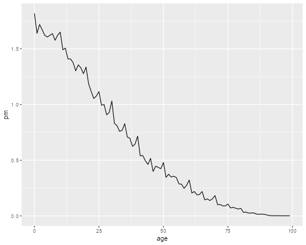

<h2 id="digit-preference">Digit Preference</h2>
<p>The datasets section has the age distribution of the Philippines in
1990 from ages 0 to 99, which appears as table 7.7 in Siegel and Swanson
(2004), p. 103. (Thanks to Tom Pullum for providing an electronic
version as well as a do file to analyze it.) We’ll calculate some
measures of digit preference using Stata and R.</p>

{% include srtabs.html %}

<p>We first read the data and plot the age distribution in single years
of age.</p>
<pre class='stata'>. infile age pop using /// 
>     https://grodri.github.io/datasets/phpop1990.dat, clear
(100 observations read)

. gen pm = pop/1000000

. line pm age, ytitle("Population (millions)") ///
>   title(Philippines 1990)

. graph export phpop1990.png, replace width(500)
file phpop1990.png saved as PNG format
</pre>
<p></p>
<pre class='r'>> library(dplyr)
> library(ggplot2)
> ph &lt;- read.table("https://grodri.github.io/datasets/phpop1990.dat",
+   header = FALSE, col.names = c("age", "pop")) |>
+   mutate(pm = pop/1000000)
> ggplot(ph, aes(age, pm)) + geom_line()
> ggsave("phpop1990r.png", width=500/72, height=400/72, dpi=72)
</pre>
<p></p>
<p>The spikes are likely to represent some form of age misreporting. To
investigate a preference for terminal digits such as 0 or 5 we could
tabulate the last digit of age:</p>
<pre class='stata'>. gen lastdigit = mod(age,10)

. tab lastdigit [fw=pop]

  lastdigit │      Freq.     Percent        Cum.
────────────┼───────────────────────────────────
          0 │  7,611,712       12.57       12.57
          1 │  6,374,857       10.53       23.10
          2 │  6,424,913       10.61       33.71
          3 │  6,042,858        9.98       43.69
          4 │  6,003,475        9.91       53.60
          5 │  6,140,517       10.14       63.74
          6 │  5,546,993        9.16       72.90
          7 │  5,664,798        9.35       82.25
          8 │  5,344,036        8.82       91.08
          9 │  5,401,935        8.92      100.00
────────────┼───────────────────────────────────
      Total │ 60,556,094      100.00
</pre>
<pre class='r'>> ph &lt;- mutate(ph, last.digit = age %% 10)
> total &lt;- sum(ph$pop)
> ph |>  group_by(last.digit) |>
+   summarize(freq = sum(pop), percent = 100*freq/total)
# A tibble: 10 × 3
   last.digit    freq percent
        &lt;dbl>   &lt;int>   &lt;dbl>
 1          0 7611712   12.6 
 2          1 6374857   10.5 
 3          2 6424913   10.6 
 4          3 6042858    9.98
 5          4 6003475    9.91
 6          5 6140517   10.1 
 7          6 5546993    9.16
 8          7 5664798    9.35
 9          8 5344036    8.82
10          9 5401935    8.92
</pre>
<p>We see a strong preference for 0, and some for 1, 2 and 5. Note,
however, that because of mortality we should expect more people at age 0
than 5 or 9, and more at 10 than 15 or 19, and so forth, with more at 80
than 85 or 89.</p>
<p>Myers’ adjustment is to tabulate the last digit several times
starting at different values. In our example we could tabulate it only
for ages 0 to 89, and then 1 to 90, until we do 9 to 98, and sum the
tabulations, obtaining a “blended” population which helps control for
the trend.</p>
<p>This is equivalent to counting all ages 10 times, except ages 0 to 8
(which are counted 1 to 9 times, respectively) and 90 to 98 (which are
counted 9 to 1 times, respectively). So we can obtain the result more
easily using a weight:</p>
<pre class='stata'>. gen mw = 10

. replace mw = age+1 if age &lt; 9
(9 real changes made)

. replace mw = 99-age if age > 89
(10 real changes made)

. replace mw = 0 if age > 98 
(0 real changes made)

. gen combow = pop*mw

. tab lastdigit [fw=combow], matcell(blended)

  lastdigit │      Freq.     Percent        Cum.
────────────┼───────────────────────────────────
          0 │ 59,752,360       11.28       11.28
          1 │ 50,629,836        9.56       20.84
          2 │ 52,212,367        9.86       30.70
          3 │ 50,395,096        9.51       40.21
          4 │ 51,921,770        9.80       50.01
          5 │ 54,969,894       10.38       60.39
          6 │ 50,600,297        9.55       69.94
          7 │ 53,367,794       10.07       80.02
          8 │ 51,854,354        9.79       89.81
          9 │ 54,002,900       10.19      100.00
────────────┼───────────────────────────────────
      Total │529,706,668      100.00
</pre>
<pre class='r'>> phb &lt;- mutate(ph, mw = ifelse(age &lt; 9, age+1, ifelse(age > 89, 99-age, 10)))
> totalb &lt;- sum(phb$pop * phb$mw) 
> blended &lt;- phb |> group_by(last.digit) |>
+   summarize(freq = sum(pop*mw), pct = 100*freq/totalb)
</pre>
<p>Now that we have the counts we need to divide by the sum and see how
far we are from 10% in each digit. <span class="stata">This is best done
with Mata</span></p>
<pre class='stata'>: b = st_matrix("blended")

: f = 100 * b :/ sum(b)

: sum( abs(f :- 10) )/2
  1.927534882
</pre>
<pre class='r'>> sum(abs(blended$pct - 10))/2
[1] 1.927535
</pre>
<p>So we would need to reclasify almost 2 percent of the cases. The
blended frequencies show some preference for 0, but no marked preference
for 5.</p>
<section id="a-stata-command" class="stata">
<h3>A Stata Command</h3>
<p>I have wrapped these calculations in a Stata command called
<code>myers</code>. To install it in net-aware Stata type
<code>net from https://grodri.github.io/demography</code>, and follow
the instructions. The command has online help, which you should consult
to learn about the options, which include <code>range(bot top)</code>,
to specify the (initial) range of ages to be tabulated, and
<code>months</code>, for studying heaping in duration data. To reproduce
the results above try <code>myers age[fw=pop], range(0 89)</code>. The
command stores the index in <code>r(myers)</code>.</p>
</section>
<section id="an-r-function" class="r">
<h3>An R Function</h3>
<p>I have wrapped these calculations in an R function called
<code>myers()</code>. You can get the source code using
<code>source("https://grodri.github.io/demography/myers.R")</code> The
function signature is
<code>myers(data, age, weight, limits=NULL, months=FALSE)</code>. (The
argument <code>months</code> is used to study heaping in duration data.)
To reproduce the results above try
<code>myers(ph, age, pop, c(0, 89))</code> I also provide a
<code>print()</code> method that displays the estimate, a
<code>summary()</code> method that prints the table of blended
frequencies, and a <code>plot()</code> method that displays the
deviations.</p>
</section>
<p>The data analyzed above are used as an example in Siegel and Swanson
(2004). They state that they cover the range 10-89, but in fact they
continue the sum all the way to 99 (excluding 100, which is left out of
our dataset). This is equivalent to assuming that the frequencies above
99 are all zero. We can reproduce their results exactly using <span
class="stata"><code>myers age [fw=pop], range(10 99)</code></span><span
class="r"><code>myers(ph, age, pop, c(10, 99))</code></span>.</p>
<h2 id="bangladesh">Bangladesh</h2>
<p>Here are reported durations of breastfeeding in the last closed
interval (the interval between the next-to-last and last child) from the
Bangladesh WFS:</p>
<pre class='stata'>. infile duration n using ///
>   https://grodri.github.io/datasets/bdblci.dat, clear
(56 observations read)

. twoway (line n duration) , title(Bangladesh 1975-76) ///
>   xtitle("duration of breastfeeding (LCI)") ///
>   xlabel( 0(12)72 ) xmtick(6(12)66) legend(off)

. graph export bdblci.png, width(500) replace
file bdblci.png saved as PNG format
</pre>
<p></p>
<pre class='r'>> bd &lt;- read.table("https://grodri.github.io/datasets/bdblci.dat",
+   header = FALSE, col.names = c("duration", "n"))
> ggplot(bd, aes(duration, n)) + geom_line()
> ggsave("bdblcir.png", width=500/72, height=400/72, dpi=72)
</pre>
<p></p>
<p>It seems quite clear that there is a marked preference for multiples
of a year as well as multiples of 6 months. It is possible, of course,
that women will aim to wean the child at age one, two, or three. Later
on we will see from current status evidence that this is not likely to
be the case.</p>
<p>We can calculate Myers’ index, using the months option, and
specifying a range of 0 to 59, which spans 60 months, an exact multiple
of 12, and leaves (at least) 11 more months of data for blending.</p>
<pre class='stata'>. myers duration [fw=n], range(0,59) months

 Last digit │      Freq.     Percent        Cum.
────────────┼───────────────────────────────────
          0 │     31,104       62.59       62.59
          1 │        454        0.91       63.50
          2 │        648        1.30       64.81
          3 │        800        1.61       66.42
          4 │        932        1.88       68.29
          5 │        504        1.01       69.31
          6 │     12,253       24.66       93.97
          7 │        284        0.57       94.54
          8 │        942        1.90       96.43
          9 │        566        1.14       97.57
         10 │        751        1.51       99.08
         11 │        456        0.92      100.00
────────────┼───────────────────────────────────
      Total │     49,694      100.00

Myers' Blended Index = 70.581291
</pre>
<pre class='r'>> source("https://grodri.github.io/demography/myers.R")
> m &lt;- myers(bd, duration, n, c(0, 59), TRUE)
> summary(m)

Myers's blended frequencies
   digit  freq        pct
1      0 31104 62.5910573
2      1   454  0.9135912
3      2   648  1.3039804
4      3   800  1.6098523
5      4   932  1.8754779
6      5   504  1.0142069
7      6 12253 24.6569002
8      7   284  0.5714976
9      8   942  1.8956011
10     9   566  1.1389705
11    10   751  1.5112488
12    11   456  0.9176158

Myers' blended index = 70.58 
</pre>
<p>So, 63% of the cases report an exact multiple of 12 and another 25%
report a multiple of 6 (but not 12). We would need to reclassify 71% of
the cases to obtain a uniform distribution by month.</p>
<p>This dataset does not exhibit a marked trend through the range the
way an age distribution may do, so you would expect very similar results
by just dividing duration by 12 and tabulating the remainder. We just
need to make sure we give each month an equal chance by going up to 59
or 71 months. Try</p>
<pre class='stata'>. gen dmod12 = mod(dur,12)

. tab dmod12 [fw=n] if dur &lt; 60 // or &lt; 72

     dmod12 │      Freq.     Percent        Cum.
────────────┼───────────────────────────────────
          0 │      2,746       60.03       60.03
          1 │        112        2.45       62.48
          2 │         87        1.90       64.39
          3 │        130        2.84       67.23
          4 │        101        2.21       69.44
          5 │         60        1.31       70.75
          6 │      1,059       23.15       93.90
          7 │         31        0.68       94.58
          8 │         92        2.01       96.59
          9 │         52        1.14       97.73
         10 │         66        1.44       99.17
         11 │         38        0.83      100.00
────────────┼───────────────────────────────────
      Total │      4,574      100.00
</pre>
<pre class='r'>> filter(bd, duration &lt; 60) |> 
+   group_by(remainder = duration %% 12) |> 
+   summarize(freq = sum(n)) |>
+   mutate(pct = round(100*freq/sum(freq),2) )
# A tibble: 12 × 3
   remainder  freq   pct
       &lt;dbl> &lt;int> &lt;dbl>
 1         0  2746 60.0 
 2         1   112  2.45
 3         2    87  1.9 
 4         3   130  2.84
 5         4   101  2.21
 6         5    60  1.31
 7         6  1059 23.2 
 8         7    31  0.68
 9         8    92  2.01
10         9    52  1.14
11        10    66  1.44
12        11    38  0.83
</pre>
<p>The relative frequencies are very similar to the blended ones.</p>
